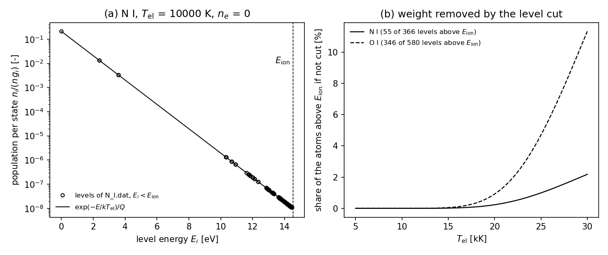

Level populations
Every emission and absorption coefficient is proportional to the number
density of the upper or lower level of a transition
(Spectral quantities and conventions). The population model provides these number
densities, cell by cell, for every level a radiator needs. radiationFoam
accepts two kinds of input, selected by the top-level entry
populationModel of system/radiationProperties:
boltzmannTemperatures: the species temperatures of the cell, from which the populations are re-expanded with an assumed Boltzmann shape;cellDistribution: the level distribution of the cell itself, \(n(n,v,J)\) sampled by dsmcFoam, with no assumption on its shape.
The second route is the purpose of the code: the radiance follows the
state-resolved populations of the gas kinetics directly. The first is the
reference against which it is compared, and the input of codes that only
carry temperatures. Source: src/radiation/populations; classes in
Population models.
The contract: levels, cell state, populations
Three plain-data objects meet in the population model.
radiationLevels(src/radiation/common/radiationLevels), built once by each radiator, lists the levels its lines need: for each level a key, a statistical weight \(g_i\) and an energy \(E_i\) [J] above the species ground level. An atomic level is identified by its label (the level index of the atomic file). A diatomic level is identified by \((n, v, J)\), the electronic-state label of the molecule file and the vibrational and rotational quantum numbers; its energy is also split into \(E_{\mathrm{el}} + E_{\mathrm{vib}} + E_{\mathrm{rot}}\), and the constants of every electronic state are attached (for the partition function below).radiationCellState(src/radiation/common/radiationCellState) holds the state of one cell: per radiating species the number density \(n_s\) and the temperaturesTtrans,Telec,Tvib,Trot; the electron density \(n_e\) and temperature \(T_e\); and, when given, the level distribution of each species.The population model returns \(n_i\) [m-3] of every level of the list, plus a bound limit \(E_b\) [J] (atomic lines whose upper level lies above \(E_b\) are not computed) and the electron temperature seen by the Stark width.
The radiators never compute populations themselves; they call
radiationPopulationModel::levelPopulations. A new population model
(e.g. a collisional-radiative one) is therefore a new derived class, with
no change to the radiators.
Route 1: Boltzmann re-expansion from temperatures
boltzmannTemperatures assumes that each internal mode of each species
is in a Boltzmann distribution at a temperature of its own. These
temperatures are inputs; the model does not compute them.
Which temperatures
The cell state carries, per species,
Cell-state entry |
Used for |
|---|---|
|
atoms: the Boltzmann distribution over the electronic levels; diatomics: the distribution over the electronic states |
|
diatomics: the distribution over \(v\) within each electronic state |
|
diatomics: the distribution over \(J\) |
|
not a population input; Doppler and pressure widths (Line shapes and broadening) |
Where they come from depends on the transport mode. In singleCell they
are the entries electronicTemperature, vibrationalTemperature,
rotationalTemperature and translationalTemperature of each species
in cellState. In shockTube1D with a macro file they are the
columns Telec_<s>, Tvib_<s>, Trot_<s>, Ttrans_<s>. From a
reconstructed dsmcFoam case they are fields: by default
translationalT_<s> for the translational temperature and
internalT_<s> for the three internal ones. dsmcFoam writes no separate
rotational, vibrational or electronic temperature, because its internal
state is rovibronic: internalT_<s> is the single temperature whose
Boltzmann distribution over the \((n,v,J)\) ladder has the sampled
mean internal energy (src/radiation/profiles/shockTubeProfile). Any of
the five can be mapped to another field per species.
Atoms
With the electron temperature \(T_e\) and the electron density \(n_e\), the ionisation limit is first lowered by the Debye-Hückel term
(\(n_e\) in m-3 divided by \(10^6\)), which gives the bound limit
with \(E_{\mathrm{ion}}\) the entry ionisationEnergy of the
species (cm-1 in the dictionary). \(T_e\) is the electron
temperature of the cell; when the cell state gives none (\(T_e \le 0\))
the electronic temperature \(T_{\mathrm{el}}\) of the species is used,
and when neither is positive there is no lowering. Both population models
apply this one rule (radiationPopulationModel::electronTemperature and
boundLimit), and the Stark width uses the same temperature. A species
without an ionisation energy (ionisationEnergy \(\le 0\), e.g. every
diatomic radiator) has no bound limit at all. For example, at
\(n_e = 10^{21}\) m-3 and \(T_e = 10^4\) K the lowering
is \(9.2\times10^{-3}\) eV.
Note
Until 2026-11-16 boltzmannTemperatures evaluated the lowering with
\(\max(1\,\mathrm{K}, T_{\mathrm{el}})\): a cold species
(\(T_{\mathrm{el}} \le 0\)) in a gas with electrons got a lowering
at 1 K (0.92 eV at \(n_e = 10^{21}\) m-3), which removed
the ground-state absorption lines to the levels within 0.92 eV of the
limit (verification/library/repro_docsweep.py, case D2).
The level cut keeps the levels of the file up to the last one, in file order, with \(E_i < E_b\):
The atomic files are sorted by energy, so this is the set of levels below \(E_b\). The cut applies also when \(n_e = 0\): then \(\Delta E_{\mathrm{ion}} = 0\) and \(E_b = E_{\mathrm{ion}}\), so the autoionising levels at or above the ionisation limit, which the NIST ASD files list (Kramida et al., 2024; 55 of the 366 N I levels, 346 of the 580 O I levels), are never bound and never populated. Only a species with no ionisation energy (\(E_{\mathrm{ion}} \le 0\)) keeps every level. If the lowering reaches the ground level, no level is bound and the species does not radiate in that cell.
The populations are the Boltzmann distribution over the kept levels:
\(Q\) is the truncated sum over the levels of the data file, with no asymptotic hydrogenic tail. The cut matters at high temperature: without it the autoionising levels would hold 0.9 % of the O I atoms at 20 000 K and 4.7 % at 25 000 K (figure below, panel b).
\(T_{\mathrm{el}} \le 0\) means no electronic excitation (e.g. a DSMC species with every particle in its ground level). The model then takes the limit \(T_{\mathrm{el}} \to 0\): all atoms in the lowest kept level(s), split by \(g\). A cold atom therefore still absorbs from its ground level.


Boltzmann populations of the atomic files as boltzmannTemperatures
forms them. (a) Population per state \(n_i/(n g_i)\) of the N I
levels kept below \(E_{\mathrm{ion}}\) at
\(T_{\mathrm{el}} = 10\,000\) K and \(n_e = 0\). (b) Share of
the atoms the levels at or above \(E_{\mathrm{ion}}\) would hold if
they were not cut. Script:
_static/figures/populations/plot_atomic_boltzmann.py.
Diatomics
For a diatomic the population is separable: one temperature per mode,
with the energy parts given by diatomicBands for each level
\((s, v, J)\):
\(G_s(v)\) includes the zero-point energy, and \(g_i\) is the weight of the level (Diatomic band systems, line by line). The rotational energy of the populations is \(B_v J(J+1)\) only (no centrifugal or spin-splitting terms, which the line positions do include).
The partition function is summed over all electronic states of the molecule file, with the rotational sum in closed form:
The \(v\)-sum stops at the first \(v\) with \(G > D_0\) or
\(G\) below the previous \(G\), and a term counts only if
\(B_s(v) > 0\). The last factor truncates the rotational sum at the
dissociation energy \(D_{0,s}\). There is no symmetry number: the
homonuclear spin statistics enter through the alternation factor of each
line, whose mean is one (Diatomic band systems, line by line). The molecule
files hold only the states of their bands plus the ground state, so
\(Q\) omits the other electronic states, a small effect below about
10 000 K (src/radiation/database/README.md).
Limits and checks of the diatomic re-expansion:
\(T_{\mathrm{el}} \le 0\): only the lowest electronic state(s) are populated (the \(T_{\mathrm{el}} \to 0\) limit);
\(T_{\mathrm{vib}} < 10\) K: no population; the species neither emits nor absorbs in that cell, with a warning once per species (the separable distribution has no \(T_{\mathrm{vib}} \to 0\) limit, because the zero-point energies are inside \(G(v)\));
\(T_{\mathrm{rot}} \le 0\): fatal error;
no bound limit (\(E_b\) is set to a very large number).
Lower population seen by the absorption
The absorption of a line needs \(n_l/g_l\). By default
(radiationPopulationModel::lineLowerPopulation) this is the lower
level’s own population divided by its weight. boltzmannTemperatures
overrides it for diatomics with the form of the verified version: the
upper population times the ratio built from the line’s own term-value
differences,
where \(\Delta E_{\mathrm{el}} = T_e' - T_e''\),
\(\Delta E_{\mathrm{vib}} = G' - G''\) and
\(\Delta F = F' - F''\) is the rotational term difference of the line
including the centrifugal and spin-splitting terms. It therefore
differs slightly from the lower level’s own Boltzmann population at high
\(J\). cellDistribution knows levels only and uses
\(n_l/g_l\) of the level list.
Route 2: the cell’s level distribution
cellDistribution takes the populations from the distribution of the
cell state, i.e. from the \(n(n,v,J)\) sampled by dsmcFoam. No shape
is assumed: a Treanor-like vibrational tail, an overpopulated metastable
or an inverted pair of levels is carried into the spectrum as it is.
Distribution file
The distribution of one cell is an OpenFOAM dictionary with one
sub-dictionary per species (radiationCellState::readDistribution). It
is written by the dsmcFoam function object dsmcRadiationDistribution
(DSMC_Rovibronic repository, src/lagrangian/DSMC/radiationCoupling),
one file cell<k> per selected cell plus an index file cells:
cell 0; // cell label, used in the diagnostics
N
{
numberDensity 9.6e20; // all levels of the species (not read)
levels
(
(1) 9.5e20 // atom: one level label
(6 7 8) 3.1e15 // atom: a group of level labels
);
g ( 4 12 ); // optional: weight of the DSMC level
coverage complete; // optional (atoms)
}
N2
{
levels
(
(X1Sigma 0 12) 1.2e18 // diatomic: (electronic state, v, J)
);
coverage ( (X1Sigma 0 0 98) (X1Sigma 1 0 97) ); // optional
}
Each entry of levels is a list of identifiers and a number density
[m-3]. Identifiers are words, integers or quoted strings (for a
state name that is not a valid word, e.g. "1c1Pi"). An atomic entry
lists level labels of the atomic file (the dsmcFoam writer reads them from
a level map of the DSMC ladder onto the radiation file); a diatomic entry
is exactly (electronic-state label of the molecule file, \(v\),
\(J\)). A species with an empty list levels ( ); is present with
no populated level; a species absent from the file has no distribution,
which is a fatal error for a radiating species. Entries the reader ignores
(numberDensity, parcelSamples, parcelCounts, energy) may be
present.
The file is named by cellState { distributionFile ...; } in
singleCell, and by the directory of shockTube1DCoeffs/distribution
in shockTube1D (each distribution cell is matched to the nearest
profile cell, which gives \(T_{\mathrm{trans}}\), \(n_s\) and the
electrons for the line shapes); see Radiative transfer.
Mapping and normalisation
An entry with number density \(N\) covers every spectroscopic level whose key it lists: for an atom the levels with the given labels, for a diatomic every level with key “state v J”, i.e. all the fine-structure components of the data that share \((n,v,J)\). \(N\) is split over these levels by statistical weight,
so the levels of a degenerate group are equally populated per state
(\(n_i = N\) for a single level). When the file gives the weight
\(g_D\) of the DSMC level of the entry (list g) and
\(g_D > \sum_j g_j\), the DSMC level holds states with no
spectroscopic level, as for the complete hydrogenic Rydberg shells of the
DSMC atomic ladders (e.g. N I DSMC levels with 450 to 1800 states, of which
the NIST file lists 162 to 80). The split is then
the same population per state over the whole DSMC level; the number density left on states without a spectroscopic level is reported in the log and does not radiate.
The populations are not renormalised to the species number density. The log (once per species, at the first cell) gives the sum of the populations against \(n_s\) of the cell state, the levels covered by no entry (count and keys), and the diatomic entries that lie outside the level set of the data: an entry of a known electronic state whose \((v,J)\) is not among the levels of any line (the DSMC ladders hold \(J = 0, \dots, J_{\max}\) and more \(v\) than the line lists) is skipped and counted. Any other entry that matches no level, and a level covered by two entries, are fatal errors.
Bound limit
The distribution has no electronic temperature. The bound limit uses the
Debye-Hückel lowering above with the cell electron temperature
\(T_e\), or the species \(T_{\mathrm{el}}\) of the cell state when
the cell gives no \(T_e\) (\(T_e \le 0\)), and no lowering if
neither is positive. The Stark width uses the same temperature. With
\(T_e = T_{\mathrm{el}}\) the bound limit and the widths of
boltzmannTemperatures are recovered exactly.
Missing levels: zero or boltzmannFill
The DSMC ladder may not carry every level the spectroscopic data list
(Rydberg levels of atoms, electronic states absent from the ladder, the
level selection of the writer). The entry missingLevels of
cellDistributionCoeffs decides what these levels get:
zero(default): \(n_i = 0\);boltzmannFill: the Boltzmann population at the electronic temperature of the species in the cell state,\[n_i = n_s\,\frac{g_i\,\exp(-E_i/k_B T_{\mathrm{el}})}{Q(T_{\mathrm{el}})},\]with \(T_{\mathrm{el}} \ge 10\) K required (fatal error otherwise). For an atom, \(Q\) sums over all levels of the file below the bound limit (the cut of
boltzmannTemperatures); levels above the cut are not filled. For a diatomic, \(E_i = E_{\mathrm{el}} + E_{\mathrm{vib}} + E_{\mathrm{rot}}\) and \(Q\) is the partition function ofboltzmannTemperatureswith \(T_{\mathrm{el}} = T_{\mathrm{vib}} = T_{\mathrm{rot}}\), i.e. the rovibronic Boltzmann distribution at one temperature. From a dsmcFoam case, \(T_{\mathrm{el}}\) isinternalT_<s>.
Sampled levels keep their populations untouched; the filled populations are not renormalised either (their sum is reported).
The coverage entry separates a level the DSMC ladder does not
carry from a level it carries but that received no parcel in the
averaging block. Only the first kind is filled. Filling the second kind
would bias rarely sampled levels upwards: for a Poisson count of mean
\(\lambda\) per block, the estimator would become
\(E[\hat n] = n_{\mathrm{true}} + e^{-\lambda}\,n_{\mathrm{fill}}\).
For atoms, coverage complete; means the list has one entry for every
carried level, with zero density for unsampled ones. For diatomics, the
coverage is a list of runs (state, \(v\), \(J_0\), \(J_1\))
of carried levels. A file without coverage (written before
2026-11-14) fills every absent level, with a warning once per species.
Diagnostics of the fill
With boltzmannFill every call of a radiator (species, cell, window)
appends a row to the CSV file fillReport (default
<case>/postProcessing/radiationFoam/cellDistributionFill.csv):
cell,species,lambdaMin_nm,lambdaMax_nm,levels,sampled_entries,filled_levels,
filled_population_fraction,j_filled,j_total,filled_emission_fraction
filled_population_fraction is the filled population over \(n_s\);
j_filled and j_total [W m-3 sr-1] are
\(\int j_\lambda\,d\lambda\) over the window of the lines whose upper
level is filled and of all lines; their ratio
filled_emission_fraction is the share of the species’ emission (and of
its optically thin radiance) that comes from modelled rather than sampled
levels. Filled lower levels also change the absorption, which this ratio
does not count. At the end of the run the log gives, per species and
window, the number of rows, the range of filled levels, the aggregate
filled share and its maximum.
Which levels emit: line selection
For a diatomic line, boltzmannTemperatures places a line only if its
emission passes the threshold of diatomicBands (the absorption follows
the emission). cellDistribution takes the populations as given: a line
whose upper level is empty or unsampled is still placed for its
absorption, when that passes the same threshold. A level that DSMC did not
populate thus still absorbs from its lower level
(Diatomic band systems, line by line).
References
Kramida, A., Ralchenko, Yu., Reader, J. and NIST ASD Team (2024). NIST Atomic Spectra Database (version 5.12). National Institute of Standards and Technology, Gaithersburg, MD. DOI 10.18434/T4W30F.